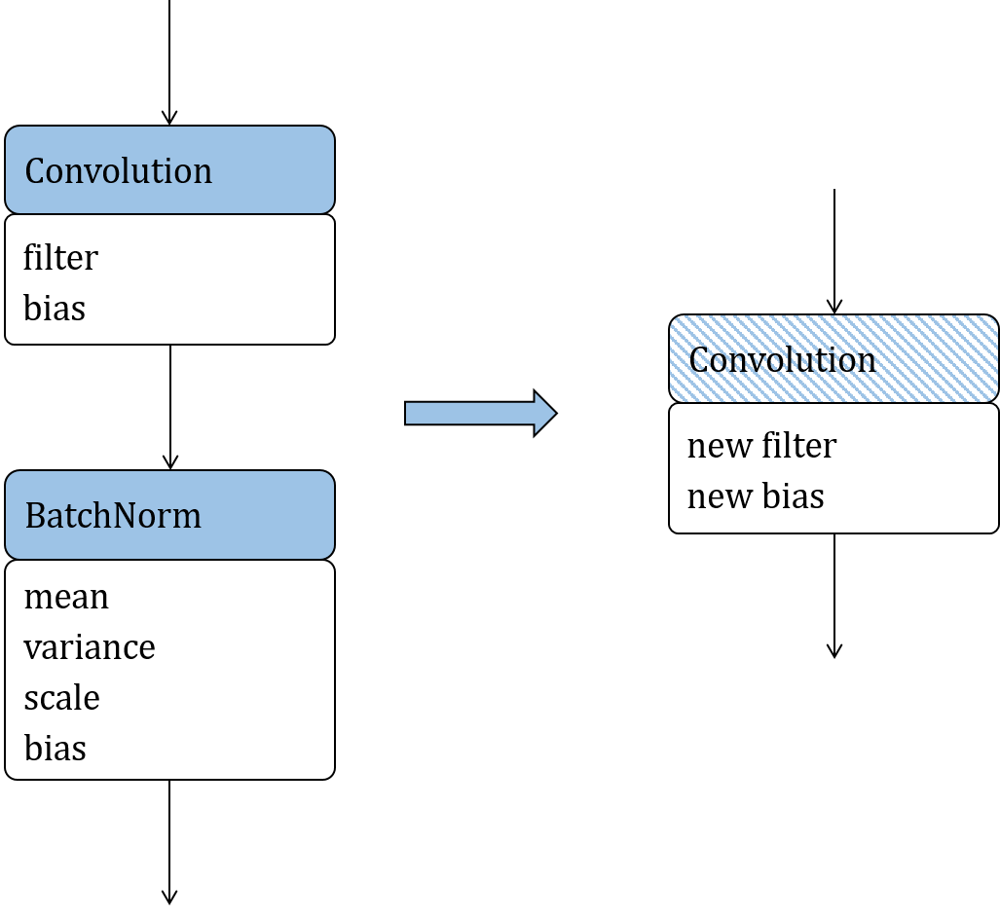
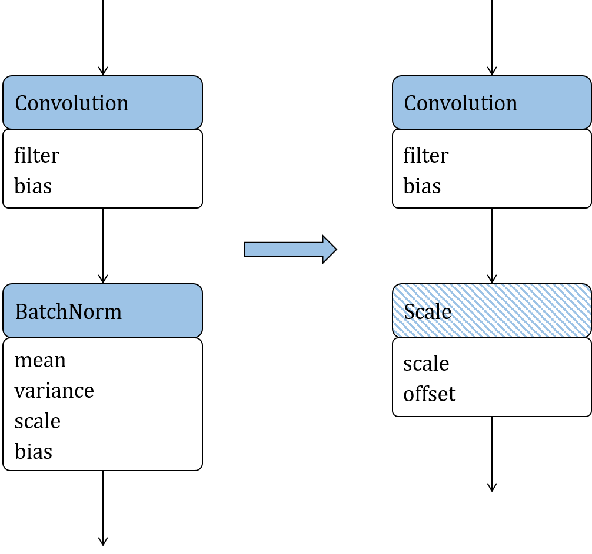
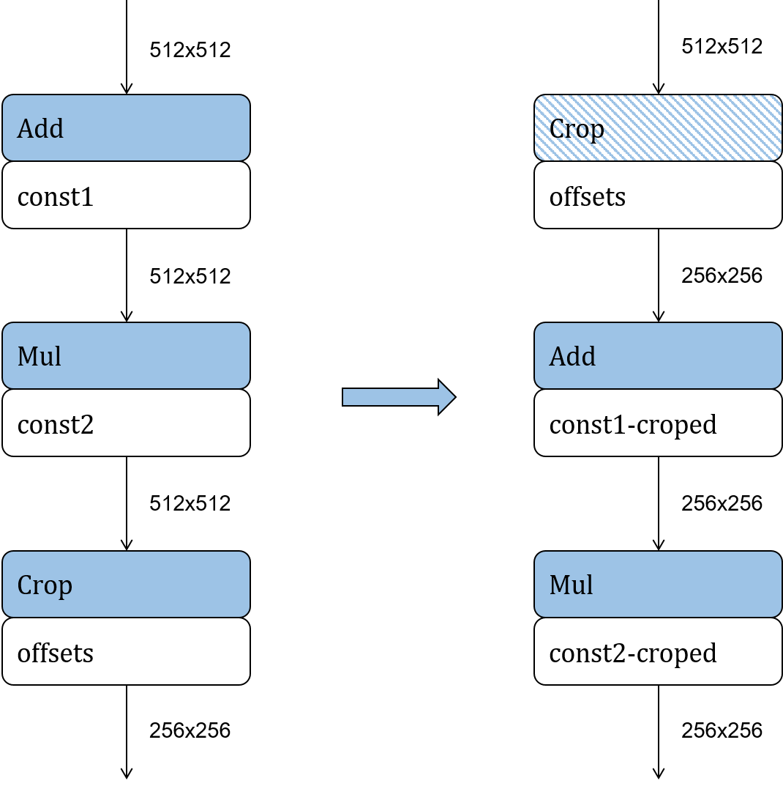

Conversion to Inference Model and Model Optimization {#sec:ch-deploy/model-optimization}¶
Model Conversion¶
As mentioned earlier, TensorFlow, PyTorch, MindSpore, MXNet, and CNTK define their own model data structures. This means that the inference system needs to convert these structures to a unified one. Open Neural Network Exchange (ONNX) is designed to implement such conversion. It supports an extensive range of machine learning operators and converts models from various frameworks (e.g., TensorFlow and PyTorch) into ONNX models. Because models are structured data, the conversion process involves converting the data structure. It starts by analyzing the similarities and differences between two data structures. If they are the same, data is transferred; if the structures are similar but with slight differences, data is mapped; if the structures differ significantly, extra semantics conversion might be required; and if they are totally incompatible, the conversion will fail. ONNX features strong expressive power, meaning that it can convert models from most frameworks in the industry to compatible ONNX models. If a model is abstracted as a graph, its data structure can be defined as follows:
Topological expression of model: The topological connections of a model are represented as edges in a graph. From the perspective of a model, these edges define the data flows and control flows in the model. Based on such definitions, we can extend to the expressions of the subgraphs, model inputs and outputs, and control flow structures. For example, the control flow on TensorFlow 1.x is expressed as a cyclic graph. To prevent the formation of cycles, TensorFlow 1.x uses operators such as Enter, Exit, Switch, LoopCond, and NextIteration, whereas ONNX uses operators such as Loop and If. As such, when converting a TensorFlow1.x control flow model into an ONNX model, the control flow graph structure in the TensorFlow model must be merged into a While or If operator on ONNX.
Operator prototype definition: Operators can be regarded as data processing or control flow nodes in a model or as vertices in a graph. An operator prototype defines the type, inputs, outputs, and attributes of an operator. For instance, Slice has different semantics on Caffe and ONNX. To convert a Caffe model into an ONNX model, we need to map Slice on Caffe to Split on ONNX. FusedBatchnorm on TensorFlow does not have a mapping operator on Caffe. Rather, Batchnorm and Scale on Caffe need to be combined to express the same semantics of FusedBatchnorm on TensorFlow. Generally, the model conversion process involves converting the topological relationships and mapping the operator prototypes between models.
Following model conversion, some input-agnostic operations are conducted for optimization purposes prior to model deployment, including constant folding, operator fusion, operator replacement, and operator reordering — optimization methods discussed earlier in this book. For instance, constant folding is usually performed during the compilation executed on the compiler frontend, whereas, operator fusion and partition are often performed (depending on the backend hardware support) once the compilation is complete. However, some optimization operations can only be performed in their entirety during the deployment phase.
:label:ch-deploy/fusion-storage}## Operator Fusion {#sec:ch-deploy/kernel-fusion
Operator fusion involves combining multiple operators in a deep neural network (DNN) model into a new operator based on certain rules, reducing the inference latency and power consumption by lowering the computation workload and load/store overhead during online inference.
The two main performance benefits brought by operator fusion are as
follows: First, it maximizes the utilization of registers and caches.
And second, because it combines operators, the load/store time between
the CPU and memory is reduced. Figure
ch-deploy/fusion-storage shows the architecture of a
computer’s storage system. While the storage capacity increases from the
level-1 cache (L1) to hard disk, so too does the time for reading data.
After operator fusion is performed, the previous computation result can
be temporarily stored in the CPU’s register or cache where the next
computation can directly read the result, reducing the number of I/O
operations on the memory. Furthermore, operator fusion allows some
computation to be completed in advance, eliminating redundant or even
cyclic redundant computing during forward computation.

Convolution + Batchnorm operatorfusion¶
To describe the principle of operator fusion, we will use two operators,
Convolution and Batchnorm, as shown in Figure
ch-deploy/conv-bn-fusion. In the figure, the solid-colored
boxes indicate operators, the resulting operators after fusion is
performed are represented by hatched boxes, and the weights or constant
tensors of operators are outlined in white. The fusion can be understood
as the simplification of an equation. The computation of Convolution is
expressed as Equation ch-deploy/conv-equation.
:eqlabel:equ:ch-deploy/conv-equation
Here, we do not need to understand what each variable means. Instead, we
only need to keep in mind that Equation
ch-deploy/conv-equation is an equation for
\(\bf{Y_{\rm conv}}\) with respect to \(\bf{X_{\rm conv}}\), and
other symbols are constants.
Equation ch-deploy/bn-equation is about the computation of
Batchnorm:
:eqlabel:equ:ch-deploy/bn-equation
Similarly, it is an equation for \(\bf{Y_{\rm bn}}\) with respect to \(\bf{X_{\rm bn}}\). Other symbols in the equation represent constants.
As shown in Figure ch-deploy/conv-bn-fusion, when the output
of Convolution is used as the input of Batchnorm, the formula of
Batchnorm is a function for \(\bf{Y_{\rm bn}}\) with respect to
\(\bf{X_{\rm conv}}\). After substituting \(\bf{Y_{\rm conv}}\)
into \(\bf{X_{\rm bn}}\) and uniting and extracting the constants,
we obtain Equation ch-deploy/conv-bn-equation-3.
:eqlabel:equ:ch-deploy/conv-bn-equation-3
Here, \(\bf{A}\) and \(\bf{B}\) are two matrices. It can be
noticed that Equation ch-deploy/conv-bn-equation-3 is a
formula for computing Convolution. The preceding example shows that the
computation of Convolution and Batchnorm can be fused into an equivalent
Convolution operator. Such fusion is referred to as formula fusion.
The fusion of Convolution and Batchnorm eliminates a Batchnorm operation, thereby reducing the quantity of parameters and computation workload are reduced, and thereby the load/store operations are also reduced. In general, this fusion not only optimizes the power consumption and performance during model deployment, but also brings certain benefits in compressing the model size.
Symbols that are considered as constants in the Convolution and Batchnorm formulas during fusion are considered as parameters during training. Performing fusion during the training process will result in missing model parameters. Because the fusion eliminates a Batchnorm operator and corresponding parameters from the network, the algorithm of the DNN is changed, degrading the accuracy to unacceptable levels. Therefore, the fusion of Convolution and Batchnorm is an optimization method typically used during deployment. To evaluate the optimization effect, we constructed a sample network with Convolution and Batchnorm using MindSpore Lite. We ran the sample network and mobilenet-v2 network for inference in dual threads on a Huawei Mate 30 smartphone to compare the time of running 3,000 inference epochs before and after the fusion. As shown in Table 1, the inference performance of the sample network and mobilenet-v2 network is improved considerably after the fusion — by 8.5% and 11.7% respectively. Such improvements are achieved without bringing side effects and without requiring additional hardware or operator libraries.
after fusion (unit: ms)
Fusion
Sample
Mobilenet-v2
Before fusion
0.035
15.415
After fusion
0.031
13.606
Operator Replacement¶
The principle of operator replacement is to simplify an operator formula by uniting like terms, extracting common factors, and employing other mathematical methods, and then map the simplified formula to a certain type of operators that have the same computational logic but are more suitable for online deployment. In this way, we can reduce the computation workload and compress the model.

Replacement ofBatchnorm¶
Figure ch-deploy/bn-replace depicts the replacement of
Batchnorm with Scale, which is used as an example to describe the
principle of operator replacement. After decomposing Equation
ch-deploy/bn-equation (the Batchnorm formula) and folding the
constants, Batchnorm is defined as Equation
ch-deploy/replace-scale
:eqlabel:equ:ch-deploy/replace-scale
where scale and offsets are scalars. This simplified formula can be mapped to a Scale operator.
Compared with the original Batchnorm formula, the simplified formula has fewer parameters and involves less computation workload. This indicates that operator replacement is an effective approach to optimizing the power consumption and performance of a model during deployment. Symbols that are considered as constants in Batchnorm during deployment are not considered as constants during training, meaning that the replacement can be performed only during deployment. Operator replacement reduces the quantity of parameters and changes the structure of the model, weakening the expressive power and reducing the accuracy of the model during convergence.
Operator Reordering¶
Another way of reducing the computation workload of an inference model is to adjust the topological order of its operators according to certain rules, on the condition that the inference accuracy is not degraded. Common methods of operator reordering include moving cropping operators (e.g., Slice, StrideSlice, and Crop) forward, and reordering Reshape, Transpose, and BinaryOp.

Reordering ofCrop¶
Crop is used to cut a part out of the input feature map as the output.
After Crop is executed, the size of the feature map is reduced. As shown
in Figure ch-deploy/crop-reorder, moving Crop forward to cut
the feature map before other operators reduces the computation workload
of subsequent operators, thereby improving the inference performance in
the deployment phase. Such improvement is related to the operator
parameters. Note, however, that Crop can be moved forward only along
element-wise operators.
The experiment result above proves that optimizing models before inference makes it possible to significantly reduce the latency, power consumption, and memory usage.